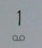
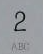
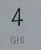
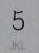
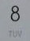
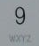
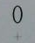
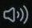
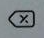

让机械臂自动拨打任意电话号码
本教程引导你完成拨号功能的全流程配置。配置完成后，同一份脚本可反复使用——每次执行前只需修改脚本中的电话号码即可。
环境要求
开始前，请确认以下条件已满足：
- • RobotArmServer.exe 正在运行
- • 摄像头 已对准手机屏幕
- • 标定 已完成
- • 电话APP图标 已在
app_desktop.yaml中配置（以便run_app能启动它）
准备数字图标模板
拨号功能依赖 0-9 数字图标以及 * 和 # 特殊键的模板图片。将这些文件放在 icons/phone/ 目录中。









mask: false 进行模板匹配，因为数字按钮可能出现在不同背景上。编写拨号页面配置文件
在 scripts/configs/app_phone_dialer.yaml 创建页面配置。它告诉程序如何识别拨号器的不同界面。
如果只需要拨打号码（不需要监控通话状态），配置非常简单：
app_name: 手机拨号器 pages: # 拨号键盘页面 - name: dial_pad min_match: 2 must_features: - name: 数字1 type: image path: icons/phone/num1.png mask: false - name: 数字2 type: image path: icons/phone/num2.png mask: false - name: 数字3 type: image path: icons/phone/num3.png mask: false features: - name: 数字0 type: image path: icons/phone/num0.png mask: false - name: 拨打按钮 type: image path: icons/phone/call.png mask: false - name: 数字4 type: image path: icons/phone/num4.png mask: false - name: 数字5 type: image path: icons/phone/num5.png mask: false - name: 数字6 type: image path: icons/phone/num6.png mask: false - name: 数字7 type: image path: icons/phone/num7.png mask: false - name: 数字8 type: image path: icons/phone/num8.png mask: false - name: 数字9 type: image path: icons/phone/num9.png mask: false
如果需要监控通话状态（免提、挂断等），添加更多页面：
app_name: 手机拨号器 pages: # 拨号键盘页面 - name: dial_pad min_match: 2 must_features: - name: 数字1 type: image path: icons/phone/num1.png mask: false - name: 数字2 type: image path: icons/phone/num2.png mask: false - name: 数字3 type: image path: icons/phone/num3.png mask: false features: - name: 数字0 type: image path: icons/phone/num0.png mask: false - name: 数字4 ~ 9 type: image path: icons/phone/num4.png # 省略写法，实际需逐个配置 - name: 拨打按钮 type: image path: icons/phone/call.png mask: false # 通话中页面 - name: in_call min_match: 0 must_features: - name: 免提 type: image path: icons/phone/speaker.png mask: false - name: 挂断 type: image path: icons/phone/hang_up.png mask: false
must_features 只需要 2-3 个数字图标 作为"门槛"来识别该页面。其余数字放入 features 作为候选池。程序匹配足够数量的图标即可确认处于拨号键盘界面。编写拨号脚本
创建一个 YAML 脚本定义拨号流程。以下是最简示例：
name: auto_dial description: "自动拨打指定号码" steps: # 1. 启动电话APP - action: run_app app_name: Phone # 2. 等待APP加载 - action: wait seconds: 2 # 3. 拨打号码（核心动作） - action: dial_number number: "13258652185" interval: 0.8 # 4. 点击绿色拨打按钮 - action: click_icon path: icons/phone/call.png mask: false # 5. 等待通话接通 - action: wait seconds: 10 # 6. 挂断 - action: click_icon path: icons/phone/hang_up.png mask: false
使用 switch_page 检测当前界面，根据不同状态执行不同动作：
name: smart_dial description: "智能拨号，含页面状态检测" steps: # 1. 启动电话APP - action: run_app app_name: Phone # 2. 等待APP加载 - action: wait seconds: 2 # 3. 循环检测页面状态 - action: loop count: 3 steps: - action: switch_page config: scripts/configs/app_phone_dialer.yaml cases: # 拨号键盘 — 输入号码 dial_pad: - action: log message: "在拨号键盘，开始输入号码" - action: dial_number number: "13258652185" interval: 0.8 - action: click_icon path: icons/phone/call.png mask: false # 通话中 — 等待后挂断 in_call: - action: log message: "通话已接通，等待中..." - action: wait seconds: 10 - action: click_icon path: icons/phone/hang_up.png mask: false # 未知页面 — 返回重试 default: - action: log message: "未知页面，返回重试" - action: go_back - action: wait seconds: 1
也可以使用 click_icons 逐个点击数字，适合需要精确控制每个数字的场景：
- action: click_icons paths: - icons/phone/num1.png - icons/phone/num3.png - icons/phone/num2.png - icons/phone/num5.png - icons/phone/num8.png - icons/phone/num6.png - icons/phone/num5.png - icons/phone/num2.png - icons/phone/num1.png - icons/phone/num8.png - icons/phone/num5.png interval: 0.8
dial_number 动作，它更简单方便——自动将号码字符串映射到对应图标。click_icons 适合需要特殊处理每个数字的场景。运行执行
脚本写好后，通过 API 执行：
# 启动拨号脚本 POST /api/run_script {"path": "scripts/auto_dial.yaml"} # 返回: {"ok":true,"data":{"script":"...","status":"started"}}
机械臂将自动完成以下步骤：
1. 通过 run_app 启动电话APP（自动回到桌面、找到电话图标、点击）
2. 等待拨号键盘出现
3. 逐个拨打每一位数字（模板匹配 + 点击）
4. 点击绿色拨打按钮
5. 等待，然后挂断
6. 完成后机械臂自动复位
# 查询脚本是否运行中 GET /api/script_status # 返回: {"ok":true,"data":{"running":true,"current_script":"scripts/auto_dial.yaml"}} # 查询详细执行进度（含每步日志） GET /api/script_progress # 返回完整步骤日志 + 时间戳
number 字段，然后再次调用 run_script 即可。无需改任何代码——脚本是解释执行的，改完即用。常见问题
可以。dial_number 会自动将 * 映射到 icons/phone/num_star.png，# 映射到 icons/phone/num_hash.png。号码中的 -、空格、括号等字符会被自动过滤。例如 "*123#" 会依次拨打星号、1、2、3、井号。
检查 icons/phone/ 中的数字图标是否与手机拨号器上的实际数字一致。如果图标样式不同，模板匹配可能会混淆相似数字。从手机截图中重新裁剪对应数字图标，然后重试。
可以，这正是设计意图。脚本是 YAML 文件——每次执行前只需修改 number 字段的值，保存后再次调用 run_script 即可。例如将 "13258652185" 改为 "18600001234"，无需重新编译或改代码。也可以直接通过 API POST /api/dial_number 拨号，不经过脚本。
可以。发送 POST 请求到 /api/dial_number：
POST /api/dial_number {"number": "13258652185", "interval": 0.8}
# 返回: {"ok":true,"data":{"clicked":true,"success_count":11,"failed":[]}}
适合从外部系统或 AI Agent 快速拨号。但注意：此 API 假设你已经在拨号键盘界面，不会自动启动电话APP。要完整自动化流程（启动APP → 拨号 → 拨打），请使用脚本。
在 dial_number 动作中设置 interval 参数。默认 0.5 秒，例如 interval: 1 表示每位数字之间等待 1 秒。对于 UI 响应较慢的手机，增大间隔有助于提高成功率。
依次检查：1) app_phone_dialer.yaml 配置文件是否存在且路径正确；2) 数字图标文件是否存在于 icons/phone/；3) 图标是否与手机拨号器上的数字一致（大小、颜色）；4) 所有数字图标是否设置了 mask: false；5) 手机是否正确放置在摄像头画面中。